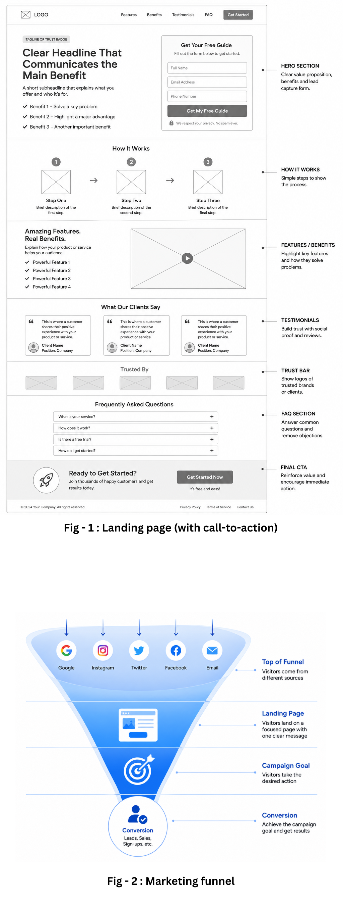

Landing pages are an important part of digital marketing because they are designed with one primary purpose: to turn visitors into leads, customers, subscribers, or registrants.
Introduction
If you have ever clicked a Google ad, social media advertisement, promotional email, or online offer and arrived on a page designed to get you to take one specific action, you have probably visited a landing page.
Unlike a typical website page that may encourage visitors to browse different sections, a landing page keeps the visitor focused on a specific offer and a clear call to action.
we’ll explain what a landing page is, why businesses use landing pages, the different types of landing pages, what a high-converting landing page should contain, and how you can create one for your business.
Visitors may arrive on a landing page after clicking:
- A Google or other search ad
- A Facebook or Instagram advertisement
- A LinkedIn advertisement
- A promotional email
- A social media post
- A website link
- A QR code
- An organic search result
The important thing is that the page is designed around a specific objective.
For example, a business might create a landing page to:
- Collect leads
- Promote a free consultation
- Sell a product
- Get webinar registrations
- Download an ebook
- Generate software signups
- Promote a special offer
- Collect email subscribers
The reference describes this single-focus approach as the key characteristic that separates landing pages from ordinary web pages.
Landing Page vs. Homepage: What's the Difference?
One of the easiest ways to understand a landing page is to compare it with a homepage.
Homepage
A strategic welcome sequence helps you:
A homepage usually represents the overall business.
It may contain:
- Company information
- Products and services
- About us
- Blog
- Contact information
- Navigation menus
- Multiple calls to action
- Links to different sections of the website
Its purpose is generally to help visitors explore the business.

Landing Page
A landing page has a much narrower purpose.
It normally focuses on:
One audience + one offer + one goal + one primary call to action
For example, suppose a digital marketing agency wants to generate leads for its website design service.
Instead of sending an advertisement to its homepage, the agency could create a dedicated page with:
Get a Professional Website for Your Small Business
The page could explain the benefits, show examples, provide testimonials, and include a form to request a consultation.
The visitor has fewer distractions and a clearer path toward taking action.
The reference specifically highlights that landing pages generally contain fewer distractions and links than homepages, helping keep visitors focused on the desired action.
Why Are Landing Pages Important?
Getting people to visit your website is only part of digital marketing.
The next challenge is getting those visitors to do something valuable.
For example:
Traffic → Landing Page → Conversion
A conversion could mean:
- Filling out a contact form
- Booking an appointment
- Downloading a resource
- Signing up for a free trial
- Purchasing a product
- Registering for an event
- Subscribing to an email list
A well-designed landing page removes unnecessary distractions and focuses the visitor on the intended action.
This makes landing pages particularly useful for paid advertising and lead-generation campaigns.
Instead of spending more money simply to generate additional visitors, businesses can also work on converting a greater percentage of the visitors they already have.
What Are the Key Elements of a Good Landing Page?
A successful landing page doesn't necessarily need to be complicated.
In fact, simplicity is often one of its strengths.
Here are some of the most important elements.
1. A Clear Headline
Your headline is usually one of the first things visitors see.
It should quickly communicate:
What are you offering, and why should the visitor care?>
For example:
Get More Leads With a Conversion-Focused Website>
is more specific than:
Welcome to Our Website
A good headline should be relevant to the advertisement, email, or link that brought the visitor to the page.
The reference recommends keeping the headline concise, relevant, and focused on the primary value or offer.
2. Concise and Relevant Content
Visitors don't usually want to read unnecessary information when they are considering an offer.
Your content should explain:
- What you are offering
- Who it is for
- What problem it solves
- What benefits the visitor receives
- What they should do next
Use short paragraphs, headings, bullet points, and easy-to-scan sections.
Avoid adding information that does not support the conversion goal.
3. A Strong Call to Action
The call to action (CTA) tells visitors what to do next.
Examples include:
- Get Started
- Book a Free Consultation
- Download the Guide
- Request a Quote
- Start Your Free Trial
- Register Now
- Buy Now
Your CTA should be noticeable and use action-oriented language.
If your landing page is designed to generate leads, the CTA might be:
Get My Free Consultation
rather than simply:
Submit>
The reference recommends making CTAs visually prominent and using direct action-oriented wording.
4. A Simple Lead Form
If your goal is lead generation, you will normally need a form.
Don't ask visitors for unnecessary information.
For example, a basic consultation form may only require:
- Name
- Phone Number
- Business Name
Asking for too much information can create friction and discourage people from completing the form.
The reference recommends keeping forms short and requesting only essential information.
5. High-Quality Images or Videos
Visual content can help visitors understand your offer.
Depending on the business, you might use:
- Product photographs
- Screenshots
- Service images
- Demonstration videos
- Before-and-after examples
- Explainer videos
- Product illustrations
However, visuals should support the message rather than distract from it.
6. Testimonials and Social Proof
People are more likely to trust an offer when they can see evidence that others have had a positive experience.
You can include:
- Customer testimonials
- Reviews
- Case studies
- Client logos
- Ratings
- Certifications
- Trust badges
For example:
“The new website helped us generate more qualified enquiries within the first month.”
Real customer experiences can reduce hesitation and increase confidence.
The reference identifies testimonials, reviews, and trust signals as useful elements for building credibility.
7. Mobile-Friendly Design
A landing page must work well on smartphones and tablets.
Make sure:
- Text is easy to read
- Buttons are easy to tap
- Forms are simple to complete
- Images resize properly
- The page doesn't require excessive scrolling or zooming
- The page loads quickly
A responsive design helps provide a consistent experience across different screen sizes.
What Are the Different Types of Landing Pages?
>Landing pages can be created for different marketing objectives.
Two common categories are lead generation landing pages and click-through landing pages.
1. Lead Generation Landing Pages
A lead generation landing page is designed to collect visitor information, usually through a form.
The visitor may receive something valuable in exchange for providing their contact information.
Examples include:
Ebook Landing Page
Offer a free ebook or guide in exchange for the visitor's name and email address.
Webinar Landing Page
Promote a webinar and collect registrations through a signup form.
Consultation Landing Page
Offer a free consultation or discovery call and ask visitors to submit their contact details.
Event Landing Page
Provide information about an event and allow visitors to register.
These types of pages are especially useful for businesses that need to build a database of potential customers.
2. Click-Through Landing Pages
A click-through landing page is generally designed to move visitors toward another step, such as purchasing a product or starting a subscription.
Instead of immediately asking visitors to complete a detailed form, the page may explain the offer and then direct them to:
- Checkout
- Product purchase
- Free trial
- App store
- Subscription page
Common examples include:
Offer a free ebook or guide in exchange for the visitor's name and email address.
Ecommerce Landing Pages
Highlight a specific product, its benefits, features, images, and purchasing options.
Signup Landing Pages
Encourage visitors to register for a service, free trial, or subscription.
Sales Landing Pages
Present an offer in detail and encourage visitors to make a purchase.
The reference identifies ecommerce, signup, and sales pages as examples of click-through landing pages.
Where Does Landing Page Traffic Come From?
A landing page needs visitors before it can generate conversions.
Businesses can drive traffic from several sources.
Paid Search Advertising
Search advertising allows businesses to reach people actively searching for specific products or services.
For example, someone searches:
“WordPress website designer for small business”
An agency could create an advertisement that sends the visitor directly to a dedicated landing page for WordPress website design.
The landing page should closely match the advertisement's message and offer.
This consistency can help create a better visitor experience.
Social Media Advertising
Platforms such as Facebook, Instagram, and LinkedIn can send targeted visitors to landing pages.
For example:
Facebook Ad → Free Marketing Checklist → Landing Page → Email Signup
or:
LinkedIn Ad → Free Consultation → Landing Page → Lead Form
The landing page should continue the same message and offer presented in the advertisement.
Email campaigns and landing pages can work together very effectively.
For example, an email might promote:
Download Our Free Small Business SEO Guide
The CTA in the email can send subscribers to a landing page where they can access the resource.
This creates a simple journey:
Email → Landing Page → Form → Download
The reference highlights email as another important source of landing-page traffic and describes how email and landing pages can work together for acquisition and nurturing.
Organic Search
Landing pages can also receive visitors from search engines.
Creating useful, relevant content can help pages appear in organic search results.
However, organic search traffic generally requires investment in SEO, content, optimization, and time. It should not automatically be treated as completely free traffic.
Frequently Asked Questions
Q. How Long Should a Landing Page Be?
A There is no universal ideal length. A landing page should be as long as necessary to provide the information visitors need to make a decision—but no longer.
Q. Can You Have a Landing Page Without a Website?
Yes. A landing page can be created for a specific campaign even if you don't have a traditional multi-page website.
Q. Why Should Small Businesses Use Landing Pages?
Landing pages can be particularly useful for small businesses because they allow you to create focused marketing campaigns.
For example, a local AC repair company could create: “Get a Free AC Repair Estimate”
Final Thoughts
A landing page is more than just another web page.
It is a focused marketing tool designed to guide visitors toward a specific action.
The basic formula is simple:
Targeted Traffic + Relevant Offer + Focused Landing Page + Clear CTA = Better Conversion Opportunities>
Whether you want to generate leads, sell products, collect email subscribers, promote an event, or offer a free consultation, a well-planned landing page can help turn marketing traffic into measurable results.
The most important thing to remember is this:
Don't build a landing page simply to have one. Build it around a specific audience, offer, and goal.
When the message, design, offer, and call to action all work together, your landing page becomes a powerful part of your digital marketing strategy.
Ready to Grow Your Business?
Index Web Solution specializes in Landing Page. We can help you design, write, and implement a Landing Page.
Contact us today to discuss your requirements and discover how we can help increase customer engagement, improve conversions, and grow your online business.